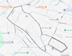

This test consists of four exercises, each scored on a 0-100 scale. The final score is the average of all four event scores.
Rules:
Scoring: 20 reps gives 100 points. For each pull up less, 5 points is deducted.
Perform as many full push-ups as possible in 2 minutes. Rules:
Scoring: 80 reps gives 100 points. Each rep less loses you 0.8 points. Rounded down.
Hold a plank position for as long as possible. Position is on your forearms and toes, keeping your body straight
Scoring: A hold of 4:20 gives 100 points. For every 2 seconds less, 1 point is deducted.
Run a distance of 2 miles (3.2 km) as fast as possible.
Scoring: 12:00 gives 100 points. For every 5 seconds more than 12:00, you lose 1 point.
Here is the route I use (click to enlarge):

Overall Score is the average of the score for the 4 exercises